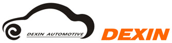

德莘汽车
DEXIN Automotive Engineering
首页
关于我们
业务范围
机器人滚边
项目案例
联系我们
德莘机器人滚边技术
DEXIN Robot Hemming
德莘机器人滚边技术介绍
💡 提示：您可以在PDF查看器中翻页查看完整内容，也可以点击下载按钮保存到本地
车间型滚边工具（数显）
💡 提示：您可以在PDF查看器中翻页查看完整内容，也可以点击下载按钮保存到本地
德莘压力表式滚边工具
💡 提示：您可以在PDF查看器中翻页查看完整内容，也可以点击下载按钮保存到本地
需要机器人滚边解决方案？
联系我们，获取专业的滚边系统设计服务
联系我们 →
×